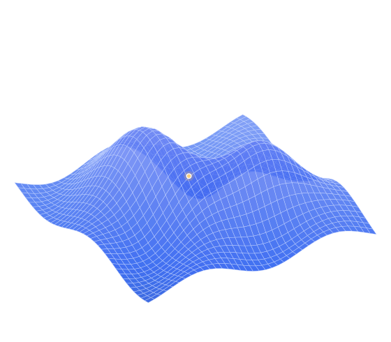

IEEE TSE2026
PHD RESEARCHER · THE UNIVERSITY OF QUEENSLAND
Bin Duan.
Making intelligent systems
more reliable.
I explore the intersection of software engineering and AI — testing the boundaries of intelligent systems, and building confidence in what comes next.
+THE BEAUTY IN EXPLORATION

f(x, y)
Finding the unexpected.
A decision landscape, reimagined.
Good questions lead to
better systems.
Software engineering✳Deep learning reliability✳LLMs for software
FOLLOWING THE QUESTIONS
A few things I’m exploring.
From the behavior of a single model to the libraries that power an entire ecosystem.
TESTING & RELIABILITY
Beyond the expected.
Exploring decision landscapes and adversarial robustness to better understand where deep learning systems break.
IEEE TSE · IEEE TDSC
LLMS FOR SOFTWARE
From language to action.
Bringing large language models into software testing, code generation and the evolution of software APIs.
ICSE · ICSME · IEEE TSE
LIBRARIES & ECOSYSTEMS
Connecting the dots.
Matching APIs across deep learning frameworks and testing the compatibility of the libraries we depend on.
ISSRE · FORGE
IDEAS, IN PRINT
Research & publications.
IEEE TDSC2026
ICSE2026
IEEE TSE2025
ICSME2025
ISSRE2025
FORGE2025
IEEE TNNLS2021
ICCECE2019
No papers found.
Try another title, author or keyword.
✳A continuing exploration of reliable software and intelligent systems.
THE PERSON BEHIND THE PAPERS
Driven by curiosity.
Grounded in research.
I’m Bin, a PhD researcher in Computer Science at the University of Queensland’s School of Electrical Engineering and Computer Science.
I’m fortunate to be advised by Guowei Yang.
My research brings together software engineering and the reliability of deep learning systems, with a focus on how we test, understand and improve the software behind AI.
UQAUSTRALIAEDUCATION
OCT 2023 — PRESENT
A deeper understanding.
PhD in Computer Science
School of Electrical Engineering
and Computer Science
The University of Queensland
THE NEXT GOOD IDEA STARTS WITH A CONVERSATION
Let’s talk research.
Have a question, a shared curiosity,
or an idea for collaboration? I’d love to hear it.